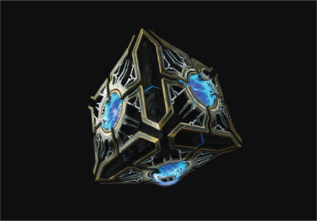

La mágia y la tecnología unidas una con la otra para hacer cosas extraordinarias. El hextech es un material que puede considerarse mágia materializada, el hextech se encuentra comúnmente en piedras azules las cuales albergan un enorme poder por la cantidad de escencia magica que tienen por dentro, Los Piltovianos lo utilizan para muchisimas cosas, aún siguen aprendiendo de este material.
La unión de la mágia y la tecnología es lo que se le denomina Arcano
Veamos a continuación algunos artefactos que han sido contruidos usando hextech:

"En la Noble Búsqueda del Progreso" es el credo de este brillante símbolo de la ciencia y el avance. Hogar de algunas de las mentes más talentosas de Runaterra
La universidad de Piltover es la masa gránde de todo Runaterra, Liderada por el profesor Heimerdinger, aqui llegan los estudiantes más prodigios a estudiar principalemente lo arcano.
En un principio lo Arcano era visto como a lgo peligroso ya que la mágia es algo que no es tan facil controlar, no fue hasta la llegada de dos de los alumnos mas prestigiosos Jayce y Viktor que mostraron que el hextech en las manos adecuadas permitiría llevar la ciencia a otro nivel, creando artefactos que mejorarian increiblemente la calidad de vida de todos los Piltovianos.
En lo referente a arte sin duda la arquitectura de Piltover no se queda atrás, edificios altos, estravagantes y con formas imposibles se pueden ver por todas partes de la ciudad Sin duda uno de los atractivos mas importantes de la capital del progreso.

Piltover está en todo el centro de Runaterra por lo que sin duda es un lugar transitado por los viajeros de todo el mundo, es por eso que su actividad económica mas destacada es el comercio basado principalmente en el hextech, los viajeros de otras ciudades quedan maravillados con lo que lo arcano puede hacer.
Además con ayuda del notable cientifico Jayce Talis la ciudad a contruido Hexgates las cuales son unas compuertas ubicadas en lo mas alto de la ciudad que permiten utilizar la mágia contenida en los cristales hextech para hacer viajes a unas velocidades increibles, esto permite desde trasladar mercancia hasta facilitar viajes turisticos.